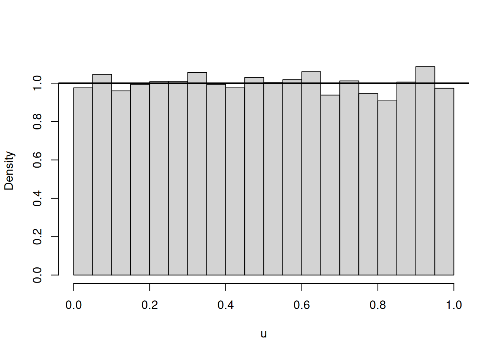
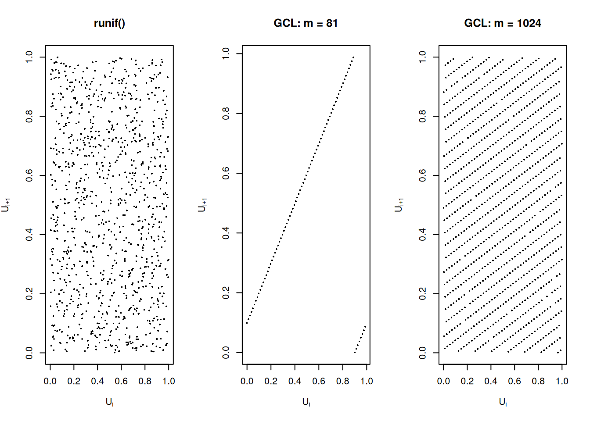
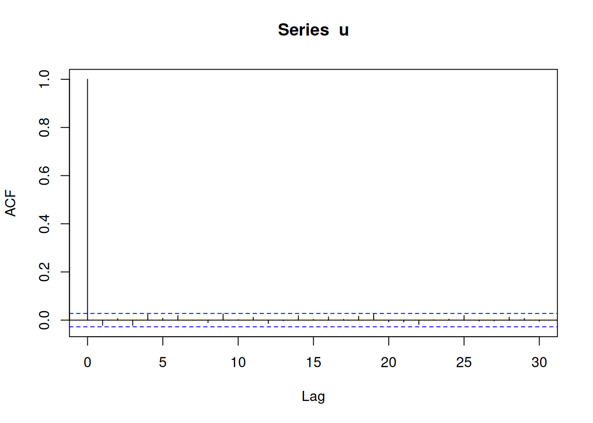
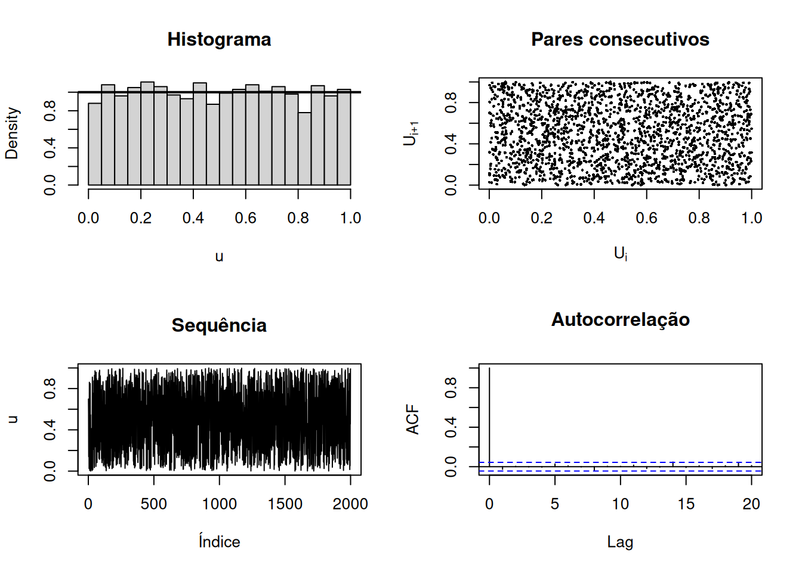
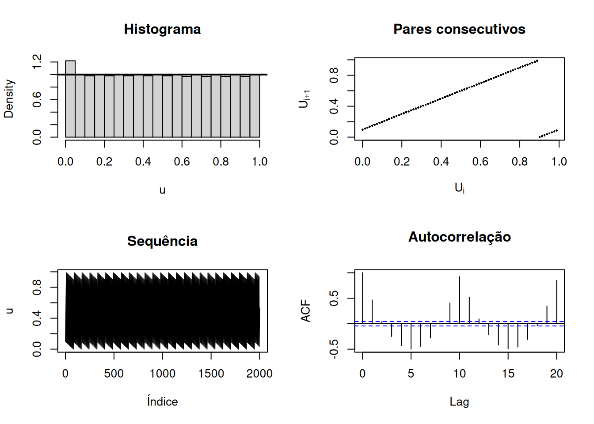
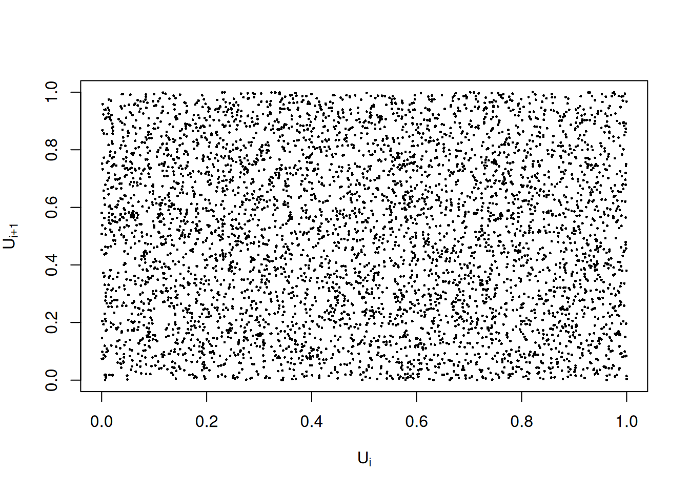

set.seed(123)
u1 <- runif(5)
set.seed(123)
u2 <- runif(5)
identical(u1, u2)[1] TRUEA geração de números pseudoaleatórios é um dos componentes fundamentais da Estatística Computacional. Métodos de Monte Carlo, procedimentos de reamostragem, algoritmos estocásticos e grande parte das rotinas de simulação dependem, em última instância, de uma fonte computacional de números que se comporte de modo suficientemente semelhante a uma sequência de variáveis aleatórias independentes com distribuição uniforme.
Neste capítulo, o foco será exclusivamente a geração pseudoaleatória uniforme. Métodos destinados a transformar números uniformes em observações de outras distribuições — como transformação inversa, aceitação-rejeição e métodos especializados — devem ser tratados em um capítulo posterior sobre geração de variáveis aleatórias.
Ver Voss (2014, cap. 1, especialmente Seção 1.1, pp. 1–8), Kroese; Taimre; Botev (2011, cap. 1, pp. 1–21) e Rubinstein; Kroese (2008, cap. 2, Seção 2.2, pp. 49–51).
Ao final deste capítulo, espera-se que o leitor seja capaz de:
set.seed() e runif() de forma reprodutível em R;A organização didática deste capítulo é baseada em Voss (2014, seç. 1.1.1–1.1.3, pp. 2–8), Kroese; Taimre; Botev (2011, seç. 1.1–1.5, pp. 1–20) e Thulin (2025, seç. 7.1.1–7.1.2, pp. 248–250).
Em grande parte dos métodos de simulação, deseja-se conceitualmente uma sequência
\[ U_1,U_2,\ldots \stackrel{iid}{\sim} U(0,1). \]
A distribuição uniforme desempenha um papel central porque pode ser utilizada como ponto de partida para construir variáveis aleatórias de outras distribuições. Assim, a geração computacional é frequentemente dividida em duas etapas:
Neste capítulo, tratamos apenas da primeira etapa.
Ver Voss (2014, Introdução do Capítulo 1 e Seção 1.1, pp. 1–2), Kroese; Taimre; Botev (2011, cap. 1, p. 1) e Rubinstein; Kroese (2008, seç. 2.1, p. 49).
Um gerador uniforme ideal produziria uma sequência infinita
\[ U_1,U_2,\ldots \]
de variáveis independentes, cada uma com distribuição \(U(0,1)\).
Em um computador de estado finito, uma sequência infinita de observações genuinamente independentes é uma abstração matemática. Na prática, busca-se uma sequência cujas propriedades relevantes sejam suficientemente semelhantes às de uma sequência iid uniforme.
Ver Kroese; Taimre; Botev (2011, seç. 1.1, pp. 1–2).
O objetivo prático não é “criar aleatoriedade matemática perfeita”, mas construir uma sequência computacional que, durante o tamanho de simulação utilizado, seja estatisticamente adequada para a finalidade científica em questão.
Existem duas estratégias conceitualmente diferentes para produzir números destinados a uma simulação. A primeira utiliza um fenômeno físico considerado aleatório, como ruído eletrônico, processos quânticos ou outros mecanismos físicos. A segunda utiliza um algoritmo determinístico implementado em computador.
Geradores físicos podem fornecer uma fonte de aleatoriedade externa ao algoritmo, mas sua sequência não pode ser reproduzida novamente a menos que tenha sido registrada. Geradores algorítmicos, em contraste, são rápidos, econômicos em memória e permitem reproduzir exatamente uma sequência quando o estado inicial é conhecido.
Fontes físicas de aleatoriedade podem explorar, por exemplo, ruído eletrônico, fenômenos quânticos ou decaimento radioativo. Para simulação computacional, contudo, geradores algorítmicos são particularmente atraentes por serem rápidos e, sobretudo, reprodutíveis quando o estado inicial é conhecido (Voss, 2014, seç. 1.1, p. 2; Rubinstein; Kroese, 2008, seç. 2.2, pp. 49–50).
Um gerador de números pseudoaleatórios (pseudo-random number generator, PRNG) é um algoritmo determinístico que produz uma sequência numérica destinada a substituir, em uma aplicação computacional, uma sequência de números aleatórios.
Ver Voss (2014, Definição 1.1, p. 2).
A expressão “pseudoaleatório” destaca uma diferença fundamental: depois que o algoritmo, seus parâmetros e seu estado inicial são fixados, toda a sequência está determinada.
Isso não é uma desvantagem acidental. A determinização da sequência é precisamente o que permite a reprodutibilidade de experimentos computacionais.
Uma descrição mais geral de um gerador permite separar o estado interno do valor que é apresentado ao usuário.
Considere:
A evolução é
\[ S_t=f(S_{t-1}), \]
e a saída é
\[ U_t=g(S_t). \]
Esta formulação determinística é adaptada do gerador genérico apresentado em Kroese; Taimre; Botev (2011, Algoritmo 1.1, p. 2).
O estado interno pode conter muito mais informação do que um único número produzido pelo gerador. Geradores modernos exploram essa distinção para obter períodos muito maiores e melhores propriedades multidimensionais.
A semente inicializa o estado do gerador. Se o algoritmo e a semente forem mantidos fixos, a sequência resultante também será fixa. Isso é essencial para:
Ver Voss (2014, seç. 1.1.3, p. 8), Kroese; Taimre; Botev (2011, seç. 1.1.1, pp. 2–3) e Thulin (2025, seç. 7.1.1, pp. 248–249).
A semente não torna o gerador “mais aleatório” nem melhora sua precisão. Ela apenas seleciona um estado inicial e, portanto, uma trajetória determinística dentro do gerador.
Em R, a função set.seed() permite fixar o estado inicial do gerador usado pelas rotinas de geração pseudoaleatória.
set.seed(123)
u1 <- runif(5)
set.seed(123)
u2 <- runif(5)
identical(u1, u2)[1] TRUEA saída de identical() deve ser TRUE.
Ver Thulin (2025, seç. 7.1.1, pp. 248–249) e Voss (2014, Apêndice B.4, pp. 292–293).
Se set.seed() não for executada novamente, chamadas sucessivas a runif() continuam a sequência a partir do estado corrente do gerador. A forma exata de inicialização do estado em uma sessão e a lista de geradores disponíveis são detalhes dependentes da versão do R.
Essas informações de software devem ser conferidas na documentação da versão utilizada antes da publicação.
Um gerador congruencial produz inicialmente inteiros
\[ X_n\in\{0,1,\ldots,m-1\}. \]
É necessário transformá-los em valores utilizados como aproximações de uma distribuição uniforme contínua.
Uma forma direta é
\[ U_n=\frac{X_n}{m}. \]
Nesse caso,
\[ U_n\in \left\{ 0,\frac1m,\ldots,\frac{m-1}{m} \right\} \subset[0,1). \]
Portanto, essa transformação pode produzir zero.
Outra transformação apresentada por Voss (2014) é
\[ \boxed{ U_n= \frac{X_n+1}{m+1} }, \]
para a qual
\[ U_n\in \left\{ \frac1{m+1}, \frac2{m+1}, \ldots, \frac{m}{m+1} \right\} \subset(0,1). \]
Ver Voss (2014, seç. 1.1.3, p. 8).
Nenhuma dessas sequências é literalmente contínua. Um computador representa apenas um conjunto finito de estados e um conjunto finito de números de ponto flutuante. A distribuição \(U(0,1)\) é, portanto, um modelo matemático para o comportamento desejado da saída.
O Gerador Congruencial Linear (GCL; em inglês, Linear Congruential Generator, LCG) é uma das construções mais simples e historicamente importantes de geração pseudoaleatória.
Dados inteiros
\[ m>1, \]
\[ a\in\{1,\ldots,m-1\}, \]
\[ c\in\{0,\ldots,m-1\}, \]
e uma semente
\[ X_0\in\{0,\ldots,m-1\}, \]
o GCL é definido pela recorrência
\[ \boxed{ X_n= (aX_{n-1}+c)\bmod m }, \qquad n=1,2,\ldots \]
O parâmetro \(m\) é o módulo, \(a\) é o multiplicador, \(c\) é o incremento e \(X_0\) é a semente.
Ver Voss (2014, Algoritmo 1.2, pp. 2–3), Kroese; Taimre; Botev (2011, seç. 1.2.1, pp. 4–5) e Rubinstein; Kroese (2008, seç. 2.2, p. 50).
Quando
\[ c=0, \]
temos o chamado gerador congruencial multiplicativo:
\[ X_n=aX_{n-1}\bmod m. \]
Ver Kroese; Taimre; Botev (2011, seç. 1.2.1, pp. 4–5) e Rubinstein; Kroese (2008, seç. 2.2, p. 50).
Uma representação do GCL é:
Considere
\[ m=8, \qquad a=5, \qquad c=1, \qquad X_0=0. \]
A sequência é
\[ 1,6,7,4,5,2,3,0,1,6,\ldots \]
e retorna ao estado inicial depois de oito atualizações.
Exemplo retirado de Voss (2014, Exemplo 1.3, p. 3).
Visualmente, os primeiros termos não parecem conter um padrão trivial. Entretanto, a sequência é completamente determinística e, após oito passos, repete-se exatamente. Esse exemplo é útil para separar aparência de aleatoriedade de aleatoriedade matemática.
A função a seguir implementa o GCL e devolve tanto os estados inteiros quanto uma transformação para \((0,1)\).
gcl <- function(
n,
seed,
a,
c,
m,
intervalo_aberto = TRUE
) {
inteiro <- function(z) {
is.numeric(z) &&
length(z) == 1L &&
is.finite(z) &&
z == floor(z)
}
if (!inteiro(n) || n < 1) {
stop("n deve ser um inteiro positivo.")
}
if (!inteiro(m) || m <= 1) {
stop("m deve ser um inteiro maior que 1.")
}
if (!inteiro(a) || a < 1 || a >= m) {
stop("a deve pertencer a {1, ..., m - 1}.")
}
if (!inteiro(c) || c < 0 || c >= m) {
stop("c deve pertencer a {0, ..., m - 1}.")
}
if (!inteiro(seed) || seed < 0 || seed >= m) {
stop("seed deve pertencer a {0, ..., m - 1}.")
}
# Em R, números do tipo double representam exatamente todos os
# inteiros apenas até 2^53. Acima desse limite, a aritmética
# modular desta implementação didática pode perder exatidão.
if (a * (m - 1) + c > 2^53) {
warning(
paste(
"Os produtos intermediários podem exceder 2^53;",
"use aritmética modular inteira apropriada para este caso."
)
)
}
x <- numeric(n)
atual <- seed
for (i in seq_len(n)) {
atual <- (a * atual + c) %% m
x[i] <- atual
}
if (intervalo_aberto) {
u <- (x + 1) / (m + 1)
} else {
u <- x / m
}
data.frame(
iteracao = seq_len(n),
estado = x,
u = u
)
}Algoritmo baseado em Voss (2014, Algoritmo 1.2, pp. 2–3).
gcl(
n = 10,
seed = 0,
a = 5,
c = 1,
m = 8
) iteracao estado u
1 1 1 0.2222222
2 2 6 0.7777778
3 3 7 0.8888889
4 4 4 0.5555556
5 5 5 0.6666667
6 6 2 0.3333333
7 7 3 0.4444444
8 8 0 0.1111111
9 9 1 0.2222222
10 10 6 0.7777778A função acima tem finalidade didática. Para aplicações científicas reais, Voss (2014, seç. 1.1.3, p. 8) recomenda utilizar geradores bem estabelecidos fornecidos por bibliotecas ou pacotes confiáveis, em vez de implementar um PRNG próprio.
Além disso, a implementação usa o tipo numérico padrão do R. Para módulos e multiplicadores suficientemente grandes, os produtos intermediários podem ultrapassar a faixa de inteiros representáveis exatamente em ponto flutuante; nesse caso, é necessária uma implementação de aritmética modular apropriada.
Como o estado do GCL pertence ao conjunto finito
\[ \{0,1,\ldots,m-1\}, \]
existem apenas \(m\) estados possíveis.
Pelo princípio da casa dos pombos, algum estado deverá se repetir depois de, no máximo, \(m\) atualizações. Como a transição é determinística, depois que um estado é repetido toda a trajetória subsequente também se repete. Em um gerador finito geral, pode existir um trecho inicial transiente antes da entrada no ciclo; portanto, a propriedade garantida é a periodicidade eventual.
O período é o comprimento do ciclo que se repete. Quando a trajetória entra no ciclo já no estado inicial, a sequência é periódica desde o começo; caso contrário, existe um pré-período ou trecho transiente antes do ciclo.
Ver Voss (2014, seç. 1.1.1, pp. 3–4) e Kroese; Taimre; Botev (2011, seç. 1.1, p. 2).
Para um GCL simples, o período não pode exceder \(m\).
Ver Voss (2014, pp. 3–4) e Rubinstein; Kroese (2008, p. 50).
periodo_gcl <- function(
seed,
a,
c,
m,
max_iter = m + 1
) {
visitado <- rep(NA_integer_, m)
x <- seed
for (i in 0:max_iter) {
pos <- x + 1L
if (!is.na(visitado[pos])) {
return(
list(
primeiro_indice = visitado[pos],
retorno = i,
periodo = i - visitado[pos],
estado_repetido = x
)
)
}
visitado[pos] <- i
x <- (a * x + c) %% m
}
stop("Nenhum ciclo encontrado no limite informado.")
}
periodo_gcl(
seed = 0,
a = 5,
c = 1,
m = 8
)$primeiro_indice
[1] 0
$retorno
[1] 8
$periodo
[1] 8
$estado_repetido
[1] 0A função é adequada apenas para módulos pequenos, pois armazena explicitamente informação sobre todos os estados possíveis.
Para um GCL com incremento possivelmente não nulo,
\[ X_n=(aX_{n-1}+c)\bmod m, \]
Voss (2014) apresenta um critério necessário e suficiente para que o período seja exatamente \(m\).
O GCL possui período \(m\) se, e somente se:
Ver Voss (2014, Teorema 1.4, p. 4).
Esse resultado mostra por que a recomendação “use sempre um módulo primo” é inadequada como regra geral. Por exemplo, o GCL
\[ m=8,\qquad a=5,\qquad c=1 \]
tem período completo:
Logo, o período é
\[ P=8. \]
Um exemplo clássico citado por Kroese; Taimre; Botev (2011) utiliza
\[ m=2^{31}-1=2147483647, \]
\[ a=7^5=16807, \]
\[ c=0. \]
Esse gerador é apresentado pelos autores como o minimal standard LCG. Para sementes não nulas, isto é,
\[ X_0\in\{1,\ldots,m-1\}, \]
o ciclo possui período
\[ 2^{31}-2. \]
A semente \(X_0=0\) é um caso degenerado: como \(c=0\), o estado zero é absorvente e produz a sequência constante \(0,0,\ldots\).
Ver Kroese; Taimre; Botev (2011, Exemplo 1.1, p. 5).
O interesse desse gerador é sobretudo histórico e didático. Kroese; Taimre; Botev (2011) observa que, apesar de suas boas propriedades para a época, seu período e suas propriedades estatísticas já não satisfazem as exigências de aplicações modernas de Monte Carlo em grande escala.
Portanto, ele é excelente para ensinar o funcionamento de um GCL, mas não deve ser apresentado como recomendação universal para simulações científicas atuais.
gcl_minimal_standard <- function(
n,
seed = 12345
) {
m <- 2^31 - 1
a <- 16807
c <- 0
if (
!is.numeric(seed) ||
length(seed) != 1L ||
!is.finite(seed) ||
seed != floor(seed) ||
seed <= 0 ||
seed >= m
) {
stop("Para o minimal standard LCG, use uma semente inteira entre 1 e m - 1.")
}
gcl(
n = n,
seed = seed,
a = a,
c = c,
m = m,
intervalo_aberto = TRUE
)
}
gcl_minimal_standard(10) iteracao estado u
1 1 207482415 0.09661653
2 2 1790989824 0.83399463
3 3 2035175616 0.94770250
4 4 77048696 0.03587860
5 5 24794531 0.01154585
6 6 109854999 0.05115522
7 7 1644515420 0.76578717
8 8 1256127050 0.58492974
9 9 1963079340 0.91413005
10 10 1683198519 0.78380039A recorrência dos estados acima é a do minimal standard LCG. A função didática gcl() converte esses estados por \(U_n=(X_n+1)/(m+1)\) para excluir os extremos \(0\) e \(1\), seguindo a convenção discutida anteriormente a partir de Voss (2014, seç. 1.1.3, p. 8). Outras implementações podem usar \(U_n=X_n/m\). Essa escolha de escala não altera o período dos estados, mas pode fazer com que os valores uniformizados não coincidam numericamente com os de outra implementação do mesmo GCL.
Um erro conceitual frequente é identificar um grande período com um bom gerador. Isso não é suficiente. Um gerador também deve produzir saídas com boa cobertura do espaço, ausência de estruturas sistemáticas relevantes, bom comportamento multidimensional e resultados satisfatórios em baterias de testes.
Ver Kroese; Taimre; Botev (2011, seç. 1.1.1–1.1.2, pp. 2–4).
Segundo Kroese; Taimre; Botev (2011), um bom gerador uniforme deve reunir propriedades como:
Ver Kroese; Taimre; Botev (2011, seç. 1.1.1, pp. 2–3).
Não existe um único número que resuma completamente a qualidade de um PRNG. O período é apenas um dos critérios.
Se uma sequência pretende substituir observações de uma distribuição uniforme, os valores produzidos devem ocupar adequadamente o intervalo.
Para uma sequência discreta de estados
\[ X_n\in S, \]
uma condição desejável é que, no longo prazo, subconjuntos de mesmo tamanho recebam aproximadamente a mesma proporção de observações.
Ver Voss (2014, seç. 1.1.2.2, pp. 4–6).
O histograma é um primeiro diagnóstico visual.
set.seed(2026)
u <- runif(10000)
hist(
u,
breaks = 20,
probability = TRUE,
main = NULL,
xlab = "u"
)
abline(
h = 1,
lwd = 2
)
Para uma distribuição \(U(0,1)\), a densidade teórica é
\[ f(u)=1, \qquad 0<u<1. \]
Um histograma aproximadamente plano é uma condição muito fraca. Sequências determinísticas extremamente regulares podem ter frequências marginais perfeitamente uniformes e ainda assim serem inadequadas para simulação.
Considere a sequência
\[ X_n=n\bmod m. \]
No longo prazo, todos os estados aparecem com a mesma frequência. Entretanto, a ordem é perfeitamente previsível.
Esse exemplo mostra que a uniformidade marginal não implica independência nem comportamento aleatório adequado.
Ver Voss (2014, seç. 1.1.2.2, pp. 4–6).
Uma consequência interessante discutida por Voss é que, ao testar a saída de um PRNG, valores de uma estatística de aderência excessivamente pequenos também podem ser suspeitos, pois podem indicar regularidade artificial.
Divida o intervalo \((0,1)\) em \(k\) subintervalos de mesmo comprimento. Sob uma sequência iid uniforme, o número esperado de observações em cada bloco é
\[ E_j=\frac{N}{k}. \]
A estatística é
\[ Q = \sum_{j=1}^k \frac{ (O_j-E_j)^2 }{ E_j }. \]
Sob as condições usuais de aproximação,
\[ Q \approx \chi^2_{k-1}. \]
Ver Voss (2014, Exemplo 1.6, pp. 5–6).
Voss destaca que, para avaliar um gerador, é informativo considerar desvios nas duas direções: estatísticas excessivamente grandes podem indicar frequências inadequadas, enquanto estatísticas excessivamente pequenas podem indicar regularidade anormal.
No código abaixo, p_extremos é uma medida diagnóstica de caudas iguais,
\[ 2\min\{P(\chi^2_{k-1}\leq Q),\;P(\chi^2_{k-1}\geq Q)\}, \]
limitada a \(1\). Ela foi adotada neste capítulo para sinalizar valores anormalmente pequenos ou grandes de \(Q\); não deve ser confundida com o valor-\(p\) unilateral usual do teste qui-quadrado de aderência.
teste_blocos <- function(u, k = 16) {
if (
!is.numeric(u) ||
length(u) == 0L ||
any(!is.finite(u)) ||
any(u < 0 | u > 1)
) {
stop("u deve conter valores numéricos finitos no intervalo [0, 1].")
}
if (
!is.numeric(k) ||
length(k) != 1L ||
!is.finite(k) ||
k != floor(k) ||
k < 2
) {
stop("k deve ser um inteiro maior ou igual a 2.")
}
n <- length(u)
classe <- pmin(
floor(k * u) + 1L,
k
)
observado <- tabulate(
classe,
nbins = k
)
esperado <- n / k
if (esperado < 5) {
warning(
paste(
"A frequência esperada por classe é menor que 5;",
"a aproximação qui-quadrado pode ser inadequada."
)
)
}
Q <- sum(
(observado - esperado)^2 /
esperado
)
gl <- k - 1
p_inferior <- pchisq(
Q,
df = gl
)
p_superior <- pchisq(
Q,
df = gl,
lower.tail = FALSE
)
p_extremos <- min(
1,
2 * min(
p_inferior,
p_superior
)
)
c(
Q = Q,
gl = gl,
p_extremos = p_extremos
)
}
set.seed(2026)
teste_blocos(
runif(100000),
k = 16
) Q gl p_extremos
13.1420800 15.0000000 0.8173507 Esse cálculo é um diagnóstico, não uma certificação de aleatoriedade. Um bom gerador deve sobreviver a uma bateria de testes que avalie diferentes aspectos de sua saída.
Ver Kroese; Taimre; Botev (2011, seç. 1.5.2, pp. 14–20).
Mesmo que cada \(U_n\) tenha comportamento marginalmente uniforme, pares ou vetores consecutivos podem revelar padrões.
Um diagnóstico simples é construir os pares
\[ (U_i,U_{i+1}), \qquad i=1,\ldots,N-1. \]
Se os valores se comportassem como observações iid uniformes, esperaríamos um preenchimento visualmente homogêneo do quadrado unitário.
Ver Voss (2014, seç. 1.1.2.3 e Figura 1.1, pp. 6–7).
O exemplo abaixo reproduz a ideia da Figura 1.1 de Voss (2014).
n <- 1000
set.seed(2026)
u_r <- runif(n)
u_ruim <- gcl(
n = n,
seed = 0,
a = 1,
c = 8,
m = 81,
intervalo_aberto = FALSE
)$u
u_intermediario <- gcl(
n = n,
seed = 0,
a = 401,
c = 101,
m = 1024,
intervalo_aberto = FALSE
)$u
par(
mfrow = c(1, 3)
)
plot(
u_r[-n],
u_r[-1],
pch = 16,
cex = 0.4,
xlab = expression(U[i]),
ylab = expression(U[i+1]),
main = "runif()"
)
plot(
u_ruim[-n],
u_ruim[-1],
pch = 16,
cex = 0.4,
xlab = expression(U[i]),
ylab = expression(U[i+1]),
main = "GCL: m = 81"
)
plot(
u_intermediario[-n],
u_intermediario[-1],
pch = 16,
cex = 0.4,
xlab = expression(U[i]),
ylab = expression(U[i+1]),
main = "GCL: m = 1024"
)
par(
mfrow = c(1, 1)
)Valores dos parâmetros e estratégia gráfica retirados de Voss (2014, fig. 1.1 e Exercício E1.2, pp. 7 e 37–38). O código foi reorganizado para o capítulo.
Para o GCL com \(m=81\), a estrutura é facilmente visível. Quando o espaço de estados cresce, a estrutura determinística pode se tornar invisível em um gráfico bidimensional, embora continue existindo matematicamente.
Esse é um dos motivos pelos quais apenas “olhar o gráfico” não é suficiente para validar um gerador.
Outra medida de dependência serial é a autocorrelação de defasagem \(h\),
\[ \rho(h) = \operatorname{Corr} (U_t,U_{t+h}). \]
Para uma sequência iid,
\[ \rho(h)=0 \]
para todo
\[ h\neq0. \]
A autocorrelação amostral pode ser examinada em R por:
set.seed(2026)
u <- runif(5000)
acf(
u,
lag.max = 30,
main = NULL
)
Autocorrelações próximas de zero não implicam independência. Dependências não lineares ou estruturas multidimensionais podem permanecer mesmo quando a correlação linear é pequena.
A necessidade de testar independência e estrutura serial é discutida em Voss (2014, seç. 1.1.2.3, pp. 6–7) e Kroese; Taimre; Botev (2011, seç. 1.5, pp. 11–20).
Um gerador pode ter boa distribuição marginal e ainda falhar quando examinamos vetores consecutivos. Considere vetores
\[ (U_i,U_{i+1},\ldots,U_{i+k-1}). \]
A qualidade multidimensional está associada à capacidade desses vetores de preencher adequadamente regiões de
\[ [0,1]^k. \]
Voss (2014) formaliza essa ideia por meio de equidistribuição \(k\)-dimensional para sequências periódicas.
Ver Voss (2014, Definição 1.7, pp. 7–8).
A dimensão relevante não é apenas a dimensão explícita do dado simulado. Um algoritmo pode consumir sucessivos números uniformes para construir uma única realização de um objeto complexo. Dessa forma, estruturas entre vários valores consecutivos podem contaminar o experimento mesmo quando histogramas univariados parecem perfeitos.
Geradores baseados em recorrências lineares apresentam uma propriedade geométrica importante: vetores formados por valores sucessivos pertencem a uma estrutura reticular.
Em determinadas dimensões, esses pontos podem se concentrar em um número relativamente pequeno de hiperplanos.
Ver Kroese; Taimre; Botev (2011, seç. 1.5.1, pp. 12–14).
O teste espectral avalia a geometria da estrutura reticular de geradores lineares, medindo quão bem os pontos podem preencher o hipercubo unitário em diferentes dimensões.
Ver Kroese; Taimre; Botev (2011, seç. 1.5.1, pp. 12–14).
Kroese; Taimre; Botev (2011) apresenta o clássico RANDU como exemplo de gerador que pode parecer razoável em baixa dimensão e apresentar deficiência estrutural marcante em dimensão três.
Ver Kroese; Taimre; Botev (2011, seç. 1.5.1, p. 14).
A lição não é memorizar os parâmetros de RANDU, mas compreender que um gerador pode passar em diagnósticos simples e ainda produzir estruturas determinísticas problemáticas em dimensões maiores.
Uma avaliação séria de um PRNG deve combinar:
Kroese; Taimre; Botev (2011) descreve testes de segunda ordem nos quais um procedimento estatístico é repetido muitas vezes e, posteriormente, a própria distribuição das estatísticas resultantes é avaliada.
Ver Kroese; Taimre; Botev (2011, seç. 1.5.2, pp. 14–20).
“Não rejeitar” a hipótese de uniformidade em um teste não demonstra que o gerador seja aleatório. Testes estatísticos são capazes de detectar alguns tipos de deficiência; não podem provar independência perfeita de uma sequência determinística.
O GCL é uma excelente ferramenta didática, mas geradores modernos utilizam estados mais ricos e estruturas algorítmicas mais sofisticadas. Kroese; Taimre; Botev (2011) apresenta, entre outras classes:
Ver Kroese; Taimre; Botev (2011, seç. 1.2–1.4, pp. 4–11).
Em um MRG de ordem \(k\), o novo estado depende de vários estados anteriores:
\[ X_t = \left( a_1X_{t-1} + \cdots + a_kX_{t-k} \right) \bmod m. \]
A ampliação do estado permite alcançar o período máximo
\[ m^k-1, \]
sob condições apropriadas: na formulação apresentada por Kroese; Taimre; Botev (2011), \(m\) deve ser primo e o polinômio característico da recorrência deve ser primitivo módulo \(m\) [Seção 1.2.2, p. 5].
A ideia central é aumentar o espaço de estados sem exigir que o módulo isoladamente seja gigantesco.
Outra família utiliza operações binárias e recorrências lineares módulo \(2\). O Mersenne Twister MT19937 é um exemplo importante dessa classe. Kroese; Taimre; Botev (2011) destaca seu grande período,
\[ 2^{19937}-1, \]
sua velocidade e suas boas propriedades de equidistribuição.
Ver Kroese; Taimre; Botev (2011, seç. 1.2.4, pp. 6–8).
Período gigantesco não elimina todas as possíveis fraquezas. Kroese; Taimre; Botev (2011) também discute limitações do MT19937 e menciona desenvolvimentos posteriores destinados a melhorar propriedades específicas.
O princípio geral permanece: nenhum gerador deve ser avaliado apenas pelo tamanho do período.
Outra estratégia é combinar a saída ou o estado de dois ou mais geradores. A combinação pode produzir período maior e melhorar propriedades estatísticas que seriam insatisfatórias nos componentes isolados. Kroese; Taimre; Botev (2011) apresenta geradores combinados e destaca a classe dos combined multiple-recursive generators.
Ver Kroese; Taimre; Botev (2011, seç. 1.3, pp. 8–10).
Simulações modernas frequentemente utilizam vários núcleos de processamento ou executam diferentes cenários simultaneamente.
Nesse contexto, é importante poder dividir a sequência pseudoaleatória em fluxos ou subfluxos planejados para evitar sobreposição indesejada.
Kroese; Taimre; Botev (2011) inclui o suporte a múltiplos fluxos entre as propriedades desejáveis de um bom gerador e cita o MRG32k3a como exemplo de classe com suporte apropriado a esse tipo de aplicação.
Ver Kroese; Taimre; Botev (2011, seç. 1.1.1, p. 3, e Seção 1.3, pp. 8–10).
A simples escolha de sementes diferentes — próximas ou não — não constitui, por si só, uma justificativa teórica para tratar as sequências resultantes como fluxos independentes adequados à paralelização. Em aplicações paralelas, deve-se utilizar uma estratégia de fluxos prevista pelo gerador ou pela biblioteca escolhida.
A forma específica de configurar esses fluxos no R depende da versão do software e deve ser conferida na documentação correspondente.
Para a prática cotidiana, não é necessário programar um PRNG desde o início. A função:
runif(n)gera \(n\) números pseudoaleatórios uniformes.
Também podemos gerar valores uniformes entre limites \(a\) e \(b\) por:
runif(n, min = a, max = b)Ver Voss (2014, Apêndice B.4, pp. 292–293), Thulin (2025, seç. 7.1.1–7.1.2, pp. 248–250) e Dormann; Ellison (2025, Apêndice A.1, p. 409).
set.seed(2026)
u <- runif(
10000,
min = 0,
max = 1
)
summary(u) Min. 1st Qu. Median Mean 3rd Qu. Max.
9.654e-05 2.504e-01 4.975e-01 4.989e-01 7.461e-01 9.999e-01 mean(u)[1] 0.4988589var(u)[1] 0.08311991Para uma variável
\[ U\sim U(0,1), \]
temos
\[ E(U)=\frac12 \]
e
\[ \operatorname{Var}(U)=\frac1{12}. \]
Portanto, para uma amostra grande, esperamos observar
\[ \bar U\approx0{,}5 \]
e
\[ s^2\approx\frac1{12}. \]
Essas comparações verificam apenas propriedades marginais simples. Elas são úteis para ensino e depuração, mas são muito fracas como teste de qualidade de um PRNG.
Para consultar a ajuda do R para verificar os geradores disponíveis, basta:
help("Random")Também é possível consultar a ajuda de funções específicas:
help("set.seed")
help("runif")runif()Um exercício informativo consiste em comparar:
diagnostico_prng <- function(
u,
lag_max = 20
) {
if (
!is.numeric(u) ||
length(u) < 2L ||
any(!is.finite(u))
) {
stop("u deve conter pelo menos dois valores numéricos finitos.")
}
if (
!is.numeric(lag_max) ||
length(lag_max) != 1L ||
!is.finite(lag_max) ||
lag_max != floor(lag_max) ||
lag_max < 1
) {
stop("lag_max deve ser um inteiro positivo.")
}
n <- length(u)
lag_max <- min(lag_max, n - 1L)
old_par <- par(no.readonly = TRUE)
on.exit(par(old_par), add = TRUE)
par(
mfrow = c(2, 2)
)
hist(
u,
breaks = 20,
probability = TRUE,
main = "Histograma",
xlab = "u"
)
abline(
h = 1,
lwd = 2
)
plot(
u[-n],
u[-1],
pch = 16,
cex = 0.4,
xlab = expression(U[i]),
ylab = expression(U[i+1]),
main = "Pares consecutivos"
)
plot(
seq_len(n),
u,
type = "l",
xlab = "Índice",
ylab = "u",
main = "Sequência"
)
acf(
u,
lag.max = lag_max,
main = "Autocorrelação"
)
}runif()set.seed(2026)
diagnostico_prng(
runif(2000)
)
u_fraco <- gcl(
n = 2000,
seed = 0,
a = 1,
c = 8,
m = 81,
intervalo_aberto = FALSE
)$u
diagnostico_prng(
u_fraco
)
Comparação inspirada em Voss (2014, fig. 1.1, p. 7, e Exercício E1.2, pp. 37–38).
Voss (2014) também compara, entre outros, o GCL
\[ m=2^{32}, \]
\[ a=1664525, \]
\[ c=1013904223. \]
Em gráficos bidimensionais, sua estrutura pode ser muito menos evidente do que a de GCLs pequenos.
u_grande <- gcl(
n = 5000,
seed = 12345,
a = 1664525,
c = 1013904223,
m = 2^32,
intervalo_aberto = FALSE
)$u
plot(
u_grande[-length(u_grande)],
u_grande[-1],
pch = 16,
cex = 0.35,
xlab = expression(U[i]),
ylab = expression(U[i+1])
)
Parâmetros retirados de Voss (2014, fig. 1.1, p. 7).
O desaparecimento visual de um padrão em duas dimensões não transforma um GCL em uma sequência iid. Testes multidimensionais e análise teórica continuam necessários.
A finalidade de um PRNG científico é produzir boas propriedades estatísticas para simulação.
Na criptografia, além dessas propriedades, a imprevisibilidade é central. Geradores lineares simples podem ser inadequados nesse contexto mesmo quando funcionam razoavelmente para certas simulações.
Ver Kroese; Taimre; Botev (2011, seç. 1.1.2 e 1.4, pp. 3 e 10–11).
“Bom para Monte Carlo” e “seguro para criptografia” são critérios diferentes. Este capítulo trata apenas da primeira finalidade.
Para simulação estatística, uma estratégia segura é:
Ver Voss (2014, seç. 1.1.3, p. 8) e Kroese; Taimre; Botev (2011, seç. 1.1.1–1.1.2, pp. 2–4).
Os três diagnósticos mais comuns — histograma, gráfico de pares e autocorrelação — têm utilidade pedagógica, mas possuem limitações.
Pode detectar grandes desvios de uniformidade, mas não detecta bem dependência.
Pode revelar padrões bidimensionais, mas não garante bom comportamento em dimensão três, quatro ou superior.
Detecta associação linear serial, mas pode deixar passar dependências não lineares.
Um PRNG não deve ser validado por uma única estatística ou figura. A avaliação robusta combina conhecimento teórico da construção com uma bateria de testes empíricos.
Ver Kroese; Taimre; Botev (2011, seç. 1.5, pp. 11–20) e Voss (2014, seç. 1.1.2, pp. 4–8).
A simulação computacional utiliza números pseudoaleatórios para substituir uma sequência ideal
\[ U_1,U_2,\ldots \stackrel{iid}{\sim} U(0,1). \]
Um PRNG algorítmico é determinístico. Seu estado evolui segundo uma função de transição e a semente determina o estado inicial. Como o espaço de estados é finito, a trajetória é eventualmente periódica: após um possível trecho transiente, ela entra em um ciclo de período finito.
O GCL utiliza
\[ X_n = (aX_{n-1}+c)\bmod m \]
e é uma ferramenta particularmente útil para compreender os conceitos de semente, período, dependência e escolha de parâmetros.
Entretanto, qualidade não significa apenas período longo. Também é necessário examinar uniformidade, dependência, comportamento multidimensional, estrutura reticular, propriedades teóricas e desempenho em baterias de testes.
Na prática, recomenda-se utilizar geradores consolidados das bibliotecas científicas, reservando implementações manuais do GCL para ensino e experimentação.
Implemente um GCL em R com argumentos n, seed, a, c e m.
Use
\[ m=8, \qquad a=5, \qquad c=1, \qquad X_0=0. \]
Baseado em Voss (2014, Exemplo 1.3 e Exercício E1.1, pp. 3 e 37).
Para o GCL do exercício anterior, construa duas sequências:
\[ U_n^{(1)}=\frac{X_n}{m} \]
e
\[ U_n^{(2)}=\frac{X_n+1}{m+1}. \]
Baseado em Voss (2014, seç. 1.1.3, p. 8).
Verifique as três condições de período completo para
\[ m=16, \qquad a=5, \qquad c=3. \]
Em seguida, use uma implementação em R para confirmar empiricamente o período.
Base de leitura: Voss (2014, Teorema 1.4, p. 4).
Considere
\[ m=17, \qquad a=5, \qquad c=1. \]
Compare os gráficos de pares consecutivos para:
runif(1000);Explique como a estrutura visual muda com o tamanho do espaço de estados.
Exercício baseado em Voss (2014, Exercício E1.2, pp. 37–38).
Considere a sequência
\[ X_n=n\bmod 1024. \]
Baseado em Voss (2014, Exemplo 1.6, pp. 5–6).
Para cada gerador do Exercício 5, estime as autocorrelações para defasagens
\[ h=1,\ldots,30. \]
Compare os resultados com os gráficos de pares.
Explique por que autocorrelação próxima de zero não implica independência.
Construa vetores
\[ (U_i,U_{i+1},U_{i+2}) \]
para um GCL pequeno.
Use uma visualização tridimensional disponível em R ou examine projeções bidimensionais com pairs().
Discuta a relação entre o experimento e a ideia de equidistribuição multidimensional.
Base de leitura: Voss (2014, Definição 1.7, pp. 7–8) e Kroese; Taimre; Botev (2011, seç. 1.5.1, pp. 12–14).
Implemente o gerador
\[ m=2^{31}-1, \qquad a=16807, \qquad c=0, \]
usando uma semente \(X_0\in\{1,\ldots,m-1\}\).
runif(10000).Base de leitura: Kroese; Taimre; Botev (2011, Exemplo 1.1, p. 5).
Execute:
set.seed(314)
u1 <- runif(10)
set.seed(314)
u2 <- runif(10)u1 e u2 são idênticos.set.seed().Baseado em Thulin (2025, seç. 7.1.1, pp. 248–249).
Explique por que cada uma das afirmações seguintes é insuficiente para concluir que um gerador é bom:
Base de leitura: Kroese; Taimre; Botev (2011, seç. 1.1.1–1.1.2 e 1.5, pp. 2–4 e 11–20) e Voss (2014, seç. 1.1.2, pp. 4–8).
Explique por que simulações paralelas exigem cuidado adicional com a geração pseudoaleatória.
Em sua resposta, diferencie:
Base de leitura: Kroese; Taimre; Botev (2011, seç. 1.1.1, p. 3, e Seção 1.3, pp. 8–10).